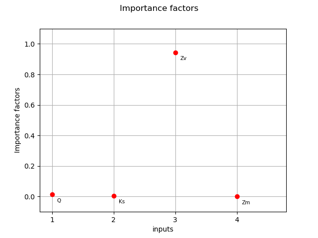
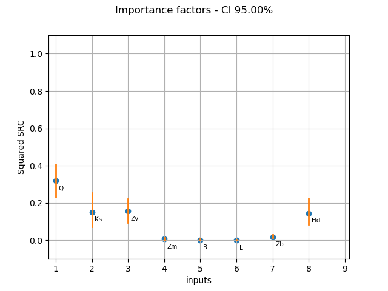

Note
Click here to download the full example code
Compute SRC indices confidence intervals¶
This example shows how to compute SRC indices confidence bounds with bootstrap.
First, we compute SRC indices and draw them.
Then we compute bootstrap confidence bounds using the BootstrapExperiment class and draw them.
import openturns as ot
import openturns.viewer as otv
from openturns.usecases import flood_model
Load the flood model.
flood = flood_model.FloodModel()
distribution = flood.distribution
g = flood.model
dim = distribution.getDimension()
We produce a pair of input and output sample.
ot.RandomGenerator.SetSeed(0)
N = 100
X = distribution.getSample(N)
Y = g(X)
Compute SRC indices from the generated design.
importance_factors = ot.CorrelationAnalysis(X, Y).computeSquaredSRC()
print(importance_factors)
[0.378122,0.159565,0.180492,0.00565251]
Plot the SRC indices.
input_names = g.getInputDescription()
graph = ot.SobolIndicesAlgorithm.DrawCorrelationCoefficients(
importance_factors, input_names, "Importance factors"
)
graph.setYTitle("Importance factors")
_ = otv.View(graph)

We now compute bootstrap confidence intervals for the importance factors.
This is done with the BootstrapExperiment class.
Create SRC bootstrap sample
bootstrap_size = 100
src_boot = ot.Sample(bootstrap_size, dim)
for i in range(bootstrap_size):
selection = ot.BootstrapExperiment.GenerateSelection(N, N)
X_boot = X[selection]
Y_boot = Y[selection]
src_boot[i, :] = ot.CorrelationAnalysis(X_boot, Y_boot).computeSquaredSRC()
Compute bootstrap quantiles
alpha = 0.05
src_lb = src_boot.computeQuantilePerComponent(alpha / 2.0)
src_ub = src_boot.computeQuantilePerComponent(1.0 - alpha / 2.0)
src_interval = ot.Interval(src_lb, src_ub)
print(src_interval)
[0.279526, 0.471558]
[0.0933866, 0.292377]
[0.117489, 0.27868]
[0.00126018, 0.0141868]
def draw_importance_factors_with_bounds(
importance_factors, input_names, alpha, importance_bounds
):
"""
Plot importance factors indices with confidence bounds of level 1 - alpha.
Parameters
----------
importance_factors : Point(dimension)
The importance factors.
input_names : list(str)
The names of the input variables.
alpha : float, in [0, 1]
The complementary confidence level.
importance_bounds : Interval(dimension)
The lower and upper bounds of the importance factors
Returns
-------
graph : Graph
The importance factors indices with lower and upper 1-alpha confidence intervals.
"""
dim = importance_factors.getDimension()
lb = importance_bounds.getLowerBound()
ub = importance_bounds.getUpperBound()
palette = ot.Drawable.BuildDefaultPalette(2)
graph = ot.SobolIndicesAlgorithm.DrawCorrelationCoefficients(
importance_factors, input_names, "Importance factors"
)
graph.setColors([palette[0], "black"])
graph.setYTitle("Importance factors")
# Add confidence bounds
for i in range(dim):
curve = ot.Curve([1 + i, 1 + i], [lb[i], ub[i]])
curve.setLineWidth(2.0)
curve.setColor(palette[1])
graph.add(curve)
return graph
Plot the SRC indices mean and confidence intervals.
src_mean = src_boot.computeMean()
graph = draw_importance_factors_with_bounds(src_mean, input_names, alpha, src_interval)
graph.setTitle(f"Importance factors - CI {(1.0 - alpha) * 100:.2f}%")
_ = otv.View(graph)

We see that the variable  must be significant, because the lower
bound of the confidence interval does not cross the X axis.
Furthermore, its bounds are significantly greater than the bounds of the
other variables (although perhaps less significantly for the
must be significant, because the lower
bound of the confidence interval does not cross the X axis.
Furthermore, its bounds are significantly greater than the bounds of the
other variables (although perhaps less significantly for the  variable).
Hence, it must be recognized that is the most important variable
in this model, according to the linear regression model.
variable).
Hence, it must be recognized that is the most important variable
in this model, according to the linear regression model.
We see that the variable  has an importance factor close to zero,
taking into account the confidence bounds (which are very small in this case).
Hence, the variable could be replaced by a constant without
reducing the variance of the output much.
has an importance factor close to zero,
taking into account the confidence bounds (which are very small in this case).
Hence, the variable could be replaced by a constant without
reducing the variance of the output much.
The variables and  are somewhat in-between these two
extreme situations. We cannot state that one of them is of greater importance
than the other, because the confidence bounds are of comparable magnitude.
Looking only at the importance factors, we may wrongly conclude that
has a greater impact than because the estimate of the
importance factor for is strictly greater than the estimate for
. But taking into account for the variability of the estimators,
this conclusion has no foundation, since confidence limits are comparable.
In order to distinguish between the impact of these two variables, a larger sample size is needed.
are somewhat in-between these two
extreme situations. We cannot state that one of them is of greater importance
than the other, because the confidence bounds are of comparable magnitude.
Looking only at the importance factors, we may wrongly conclude that
has a greater impact than because the estimate of the
importance factor for is strictly greater than the estimate for
. But taking into account for the variability of the estimators,
this conclusion has no foundation, since confidence limits are comparable.
In order to distinguish between the impact of these two variables, a larger sample size is needed.
otv.View.ShowAll()
Total running time of the script: ( 0 minutes 0.145 seconds)